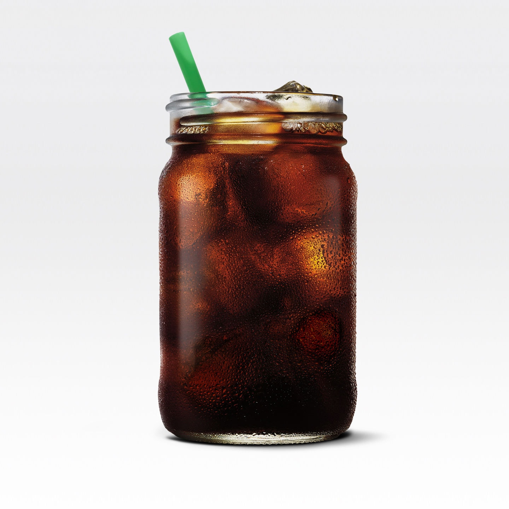
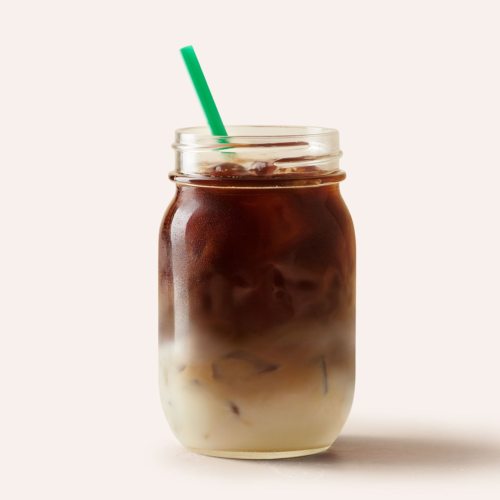
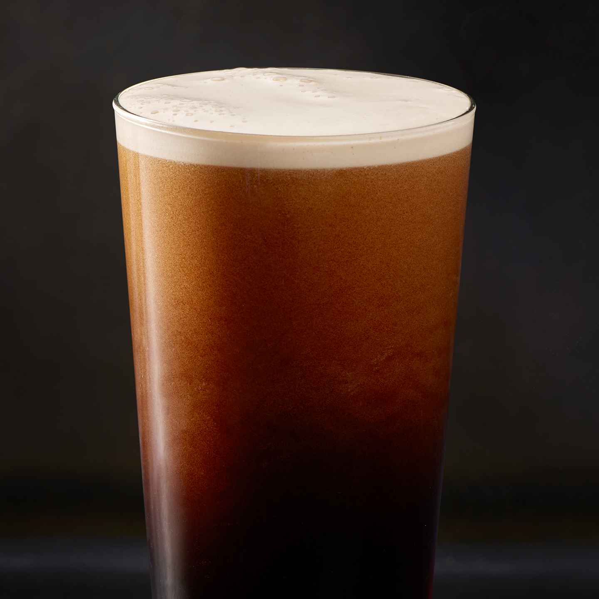

Espresso Drinks
{{drink.name}}
{{drink.desc}}
Cold Brew

Caffè Latte
Our Cold Brew coffee is handcrafted in small batches, slow-steeped in cool water for 20 hours, without touching heat, to give a super-smooth flavour.

Cold Brew Latte
Try our Cold Brew coffee just the way you like it. Add milk for a smoother flavour or one of our many dairy free options for a creamy and more flavourable finish.

Nitro Cold Brew
Sıtarbakış Cold Brew coffee is infused with nitrogen to give the beverage a smooth and velvety texture. Nitro Cold Brew is cold right out of the tap and served unsweetened without ice. A completely new coffee experience!.

Sıtarbakış Doubleshot™ Iced Coffee
Made with rich, full-bodied Signature espresso that's shaken over ice and a touch of sweetened milk, this drink is delightfully convenient and easy to drink